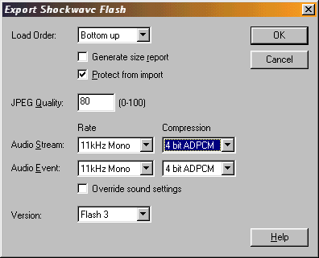
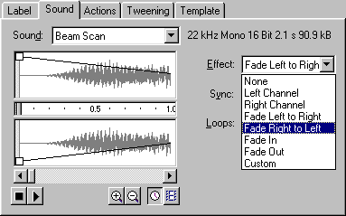
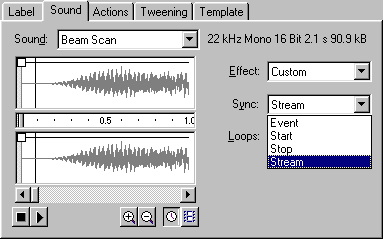

Creating Sounds and Music


To create sounds, for use on your site, all you need is a microphone, a good sound program, and some patience. As an example, all event sounds on this site, is created in such a way.
Microphone: The microphone doesn't have to be excellent, because all of the sounds you need to use, will be exported in low quality anyway. A good microphone is of course better, but the one I use, is far from excellent.
Sound software: There are some links to good shareware sound programs in the "Software" section, but the one i'd recommend, is GoldWave. An magnificent allmost free piece of great software, that can handle even the largest sounds.
Making the sounds: Well, be creative! Anything goes. I've heard about everything from blowing bubbles in a toilet, to hitting a hanging screwdriver with a piece of metal to create a bell sound. I created some of the sounds for this site, by hitting a chair, with the plastic end of a screwdriver!
Export settings: When you have your sounds ready, and have implemented them in your site, you need to define the export settings. A standard site, would be exported like this:

11 kHz Mono is good as it take up pretty little space, while being an acceptable quality. I'd also recommend 4 bit ADPCM compression.
Music: Music 1 - 7 secs, should also be exported in 11kHz, to ensure quality. If your music is more than 7 secs, you should consider trying to set the rate to 5kHz, or make a new movie for the music, which can load in the background. (Using a Load Movie command).
Stereo / Mono: You should always choose Mono, because Flash can already make a quite effective pseudo stereo effect.

This makes the export possibility for stereo obsolete for web-use. (Thereby saying the export as stereo feature might be useful for CD-ROM presentations etc.)
Other sounds: If you won't / can't create your own sounds, you can always search the web for sounds. I've assembled a small list, that will grow in time. You can find it in the Software section. It's called "Free sounds on the web".
Stream sounds: You can also choose to make your sound a "Stream sound".

A stream sound, is by shockwave
forced to keep up the pace of the other animation. This means, that the animation,
if set to FPS: 12, is forced to play 12 frames, to keep up with the sound. If
the CPU cannot handle 12 frames per second, then Flash skips enough frames,
to keep the animation "streaming" along with the sound.
A stream sound can
only play where there is frames. It will stop playing, if there are no more
frames, unlike an event sound, which can loop on forever, without frames.
This means, that if you have a long sound, (e.g. a narrator for CD-ROM presentations), you can make a start / stop button for this sound, so that the sound will stop playing, but when started again, start from where it was stopped, and not from the beginning. Special thanks to Rand, and Erica for supplying info on this!